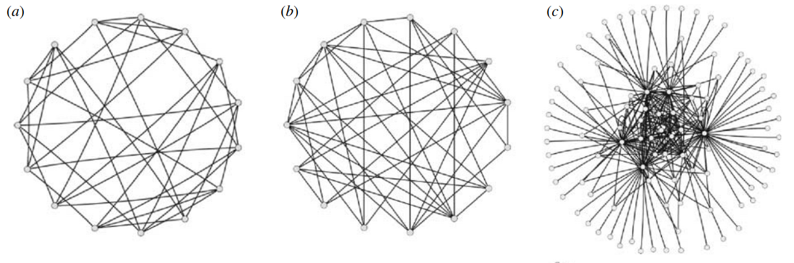
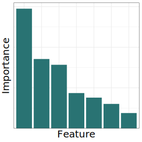

matthew michalska-smith
Who am I?
A theoretical, disease ecologist utilizing the tools of machine learning, network analysis, and stochastic simulation to explore how network structure informs ecological dynamics
How does the structure of a network relate to the dynamical processes being depicted?
How does the structure of endophytic resource competition relate to the growth and health of host plants?
How does the positioning of parasites within food-webs relate to groupings of species based on interaction similarity?
How does the structure of bipartite ecological interaction networks differ between antagonism and mutualism?
How does the structure of metapopulations of host movement relate to local disease dynamics?
How does the structure of competition networks relate to communities' dynamical stability?
How does the structure of contact networks relate to the spread of disease?
How do individuals within complex communities affect population disease dynamics?
- Basics
- Disease modelling
- Networks
- Machine learning
- Two steps along the path
- Risk tolerance in realistic human contact networks
- Global network structure and epidemic risk
- The next steps
- Individual differences in behavior
Disease Modeling Basics
S
E
I
I
R

Bansal, Grenfell, & Meyers 2007
Network Structure
- degree
- how many others do you interact with?
- triad participation
- what patterns of three-node subgraphs do you partake in?
- clustering
- do your neighbors also interact with one another?
- centralization
- how easily does energy/resource/information/disease flow across the network?
- modularity
- are there groups of nodes that tend to only interact with other members of the same group?
- mean path length
- how many steps does it usually take to get from one node to another?
Machine Learning
Megan Dibble for "Towards Data Science"
What is machine learning anyway? (part 2)

Hui Li for "The SAS Data Science Blog"
Model Accuracy
Feature Importance
Megan Dibble for "Towards Data Science"
Shapley Values
time to epidemic peak ~ network structure
Why does the model predict X for one input and Y for another?
peaks at 40 days
peaks at 50 days

How do individuals within complex communities affect population disease dynamics?
- Basics
- Disease modelling
- Networks
- Machine learning
- Two steps along the path
- Risk tolerance in realistic human contact networks
- Global network structure and epidemic risk
- The next steps
- Individual differences in behavior
How does variation in realistic human contact networks affect disease spread?

Eva Enns
Lauren White

Marie Gilbertson

Meggan Craft
In Review at Royal Society Open Science
Network
Disease Model


What is contact?

What makes a contact network realistic?
- Home/Family
- School
- Work
- Religious institutions
- Hospitals
- Nursing homes
image adapted from Monroe et al. 2021
Interaction properties
Node properties


Disease Model


What does this look like in a single simulation?


Conclusions
- Populations are highly interconnected, allowing disease to spread even to specific individuals that are taking precautions
- Community action is needed to protect the most vulnerable
- Demographic structure can have nuanced, contradictory effects on disease spread
- Framework as an educational tool
How do specific structures affect disease spread through networks?
Eva Enns
Meggan Craft
In Prep
Keeling & Eames 2005
Salathé & Jones 2010

Britton et al. 2016
Gupta, Anderson, & May 1989
Previous analyses have tended to
- Look at only one structural factor at a time
- Failed to consider intrinsic correlations within network structure
- Consider the impact on a single response variable
- Insufficiently consider the breadth of possible network structure
Be limited in scope


| Metric | Description | Potential Significance |
| connectance | the proportion of possible links that are realized | more connections allows for faster spread |
| eigenvalues | the eigenvalues with the largest real parts, as well as those of the network's laplacian | related to dynamical stability and reactivity |
| algebraic connectivity | a measure of the overall connectivity of the network (also called the Fielder value) | related to robustness and synchronizability |
| clustering | the percentage of connected, three-node subgraphs that form triangles | more clustered networks spread quickly within clusters, but this often limits overall spread |
| degree assortativity | the correlation between degree (number of connections) between connected nodes | relates to how widely a pathogen can spread |
| degree heterogeneity | a measure of the variance in degree between nodes | related to specific node risk |
| k-core decomposition | the k-core value of a node is found by recursively eliminating all nodes with degree k or lower, we note the largest value for the network as well as the number of nodes in that maximal k-core | relevant for early infection dynamics |
| k-truss decomposition | the k-truss value of a edge is found by recursively eliminating all edges involved in k or fewer cycles of a given length (we consider cycles of length 3); we note the largest value in the network, as well as the number of nodes sharing edges in that maximal k-truss | can be used to identify a high-risk core of nodes |
| 3-node subgraph counts | we count the number of each of the four possible undirected 3-node subgraphs in each network, | different meso-scale structures have different dynamical consequences; maybe easier to measure empirically |
| modularity | a measure of the tendency for nodes in the network to form groups wherein there are more connections between members of the same group and fewer connections to members of other groups | fast spread within modules, but indicates potential firewall links between modules |
| inverse participation ratio | quantifies uniformity in the distribution of nodes across communities | related to disease localization and predictability of epidemic thresholds |
| centralization measures | heuristics to calculate the cumulative importance of nodes within a network with respect to a particular flow regime | highly centralized networks might be expected to have greater disease spread (holds true in some cases for nodes) |
| mean path length | the average shortest path length between each pair of nodes in the network | smaller path lengths means fewer transmissions needed to get from any given node to another |
| diameter | the longest shortest path between each pair of nodes in the network | similar to mean path length |

Model Accuracy
Feature Importance
Preliminary Conclusions
- Dynamics are dominated by disease parameters
- But network structure is important for a given parameterization
- Feature importance depends on the outcome of interest
Future directions
- Investigate Shapley interaction terms to better explore multicollinearity
- Consider categories of metrics (especially w.r.t. empirical data collection)
- Explore more systematic ways of exhaustively, uniformly sampling network structure space
- Consider where empirical networks fall within network structure space, and relate to model outputs
How do individuals within complex communities affect population disease dynamics?
- Basics
- Disease modelling
- Networks
- Machine learning
- Two steps along the path
- Risk tolerance in realistic human contact networks
- Global network structure and epidemic risk
- The next steps
- Individual differences in behavior
How much can individual (node)-level changes influence population-level disease spread?

@City_Janesville on twitter.com
"Because you wore a mask today, two fewer people are likely to get COVID"*
"Distributing oral rabies vaccines in your county could reduce overall raccoon rabies prevalence by 0.07%"*
"Altering your livestock housing pattern will prevent three farms from needing to be culled this year"*
* hypothetical conclusion
"By not re-posting that misinformation, you have prevented 437 others from being exposed"*
"Replanting your yard to be more eco-friendly would provide a critical connection for expanding native bee foraging"*
"Constructing a wildlife corridor between these two preserves would increase biodiversity by 2%"*
* hypothetical conclusion
Disease spread is context-specific
- It depends on properties of individuals and their connections
- These many influences interact to produce non-trivial consequences on epidemic outcomes
Individuals are able to have an effect on disease spread because of network connections linking the community together
- These links can have negative consequences, making disease spread further and faster than we anticipate
- But can also have positive aspects, in that personal choices do have real-world, quantifiable consequences on population-level disease spread
And next?
- Which properties (of individuals and communities) are related to being more (or less) consequential for population-level change?
- How are individual's efforts combined (additively or otherwise)?
- What thresholds of participation are needed to effectuate population-level change?